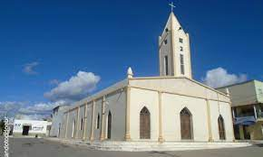
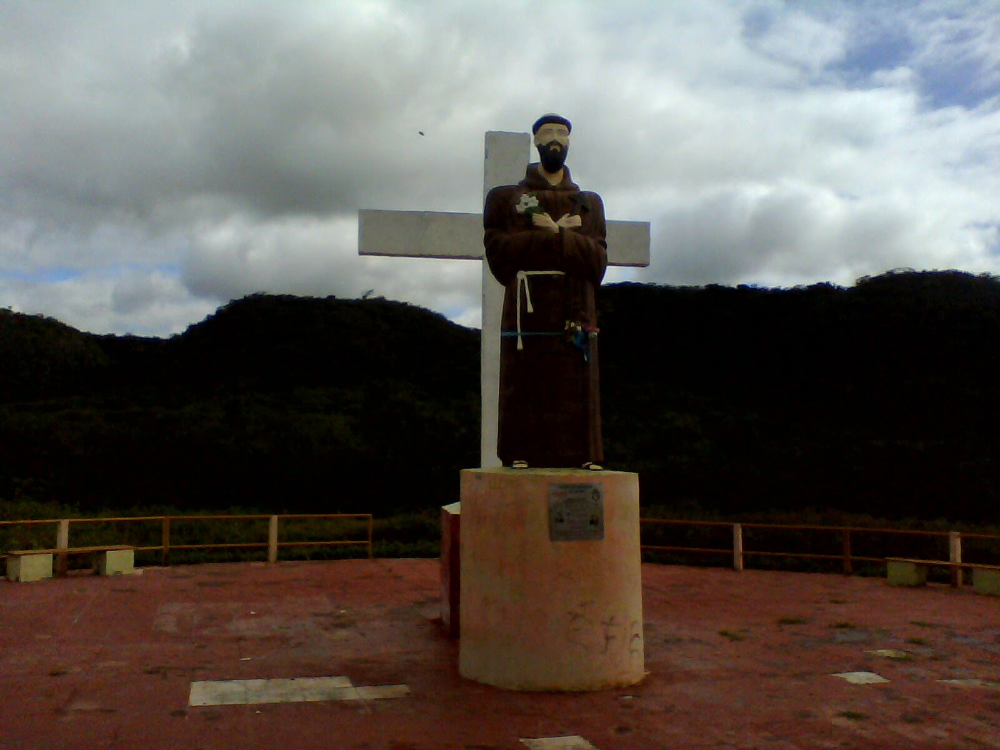
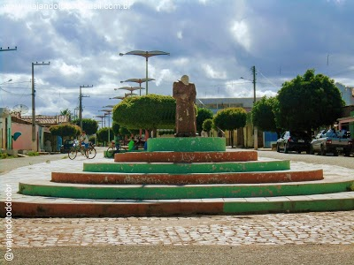
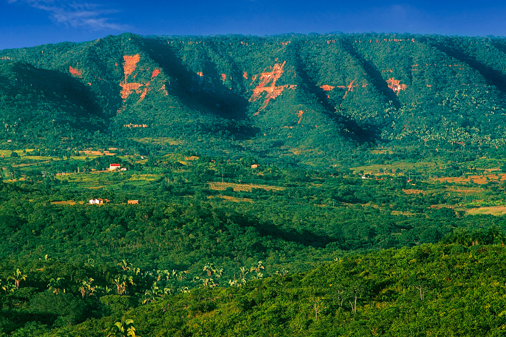

Informações técnicas sobre relevo, população, IDH etc.
| INFORMAÇÕES | |
|---|---|
| Municípios limítrofes | Norte: Campos Sales; Sul: Pernambuco(Ipuni e Araripina); Leste: Potengi e Araripe; Oeste: Piauí (Fronteiras e Caldeirão Grande do Piauí) |
| Fundação | 30 de junho de 1988 (32 anos) |
| Área total | 899,824 km² |
| Clima | Tropical quente subúmido de altitude (BSh) (As)[3] |
| IDH | 0,558 — baixo |
| PIB | R$ 81 290,976 mil |
| INFORMAÇÕES TERRITORIAIS | |
|---|---|
| Número de habitantes | 16 554 habitantes |
| Superfície de Salitre |
80 435 hectares
804,35 km² (310,56 sq mi) |
| Densidade populacional | 20,6 ha./km² |
| Altitude de Salitre | 659 metros de altitude |
| Coordenadas geográficas decimais |
Latitude:
-7.2823
Longitude: -40.4559 |
| Coordenadas geográficas sexagesimais | Latitude: 7° 16' 56'' Sul , Longitude: 40° 27' 21'' Oeste |
| INFORMAÇÕES DO MUNICÍPIO | |
|---|---|
| Endereço da Prefeitura Municipal de Salitre |
Salitre
Prefeitura de Salitre
Av. José Dionízio Filho, 13 SALITRE - CE, 63155-000 Brasil Work +55 88 3537-1219 Fax +55 88 3537-1196 |
| Telefone da prefeitura |
(88) 3537-1219
Internacional: +55 88 3537-1219 |
| Fax |
(88) 3537-1196
Internacional: +55 88 3537-1196 |
| Endereço electrónico da prefeitura |
secomsalitre@hotmail.com
|
| Site oficial do município | salitre.ce.gov.br |
| INFORMAÇÕES DO ADMINISTRATIVAS | ||
|---|---|---|
| Prefeito de Salitre | DORGIVAL PEREIRA FILHO | |
| Partido politico | PROS | |
| INFORMAÇÕES DE TRANSPORTE | |
|---|---|
| Transporte urbano disponível | - |
| Aeroporto |
Aeroporto de Picos
120.6 km
Aeroporto Regional do Cariri
131.1 km
Aeroporto de Petrolina
232 km
|
| INFORMAÇÕES DE DISTÂNCIA A OUTRAS CIDADES | ||
|---|---|---|
| São Paulo : 1928 km | Rio de Janeiro : 1764 km | Brasília : 1248 km |
| Salvador : 668 km | Belo Horizonte : 1445 km | Manaus : 2218 km |
| Curitiba : 2227 km | Fortaleza : 450 km mais perto | Goiânia : 1418 km |
| Belém : 1104 km | Porto Alegre : 2771 km | Guarulhos : 1906 km |
| Campinas : 1878 km | São Luís : 680 km | Recife : 621 km |
| Distância calculada em linha reta! | ||
Conheça mais sobre a história de Salitre.
Salitre é um município brasileiro do estado do Ceará. Sua população estimada em 2014 era de 16 070 habitantes. A principal atividade econômica do município é a Mandiocultura. A agricultura familiar é destaque com o plantio de milho e feijão; considerada capital da mandioca com mais de 200 casas de farinha (fábricas) de farinha e outros produtos e subprodutos derivados da mandioca. Salitre possui um ponto turístico denominado morro da cruz. Uma serra da chapada do Araripe onde fiéis católicos acreditam ser sagrado. Neste município foi encontrado um fóssil de um bicho preguiça gigante, sendo destaque nacional na TV Cultura através de um programa que tratou do tema.
A povoação de Salitre formou-se em torno da igrejinha local. É um dos municípios mais secos do Ceará, com toponímia originária de uma mina de salitre localizada no sopé da Serra do Araripe. A cidade possui um parque de vaquejada, onde são relizadas competições da derrubada do boi, animadas por cordelistas e violeiros. Registra-se a presença de uma comunidade quilombo-la, que expressa sua cultura através de ritos de candomblé. Salitre desenvolve a agricultura de subsistência adequada às condições do solo, sendo destaques o algodão e a mandioca, que se reflete nas casas de farinha e na gastronomia local.

Saiba mais sobre os melhores lugares e o que fazer em Salitre.
MORRO DA CRUZ - SALITRE CE
PRAÇA FREI DAMIÃO
SERRA DA CHAPADA DO ARARIPE: Acidente geográfico e sítio paleontológico localizado na divisa dos estados do Ceará, Pernambuco e Piauí, no Brasil. A chapada abriga uma floresta nacional, uma área de proteção ambiental e um geoparque.

Veja como chegar nos melhores pontos de Salitre
SAIBA COMO CHEGAR EM SALITRE